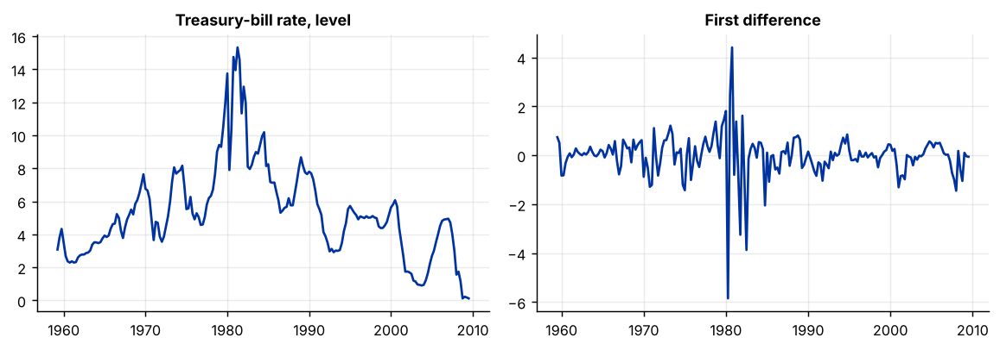

Step 1The question and the model
Is the series stationary, or does a shock to it never die out? Write the series as \(y_t = \rho\, y_{t-1} + u_t\). If \(|\rho| < 1\), shocks fade and the series is stationary, I(0). If \(\rho = 1\), shocks last forever and the series is a random walk, I(1). The augmented Dickey-Fuller (ADF) regression tests this by adding lagged differences to absorb serial correlation:
| Test | Null hypothesis | What it adds |
|---|---|---|
| ADF | unit root | the standard test; sensitive to the number of lags |
| Phillips-Perron | unit root | corrects the statistic for serial correlation without extra lags |
| DF-GLS | unit root | removes the constant and trend by GLS first; more powerful when the root is near one |
| KPSS | stationary | reverses the null, so the two kinds of test can be compared |
| Zivot-Andrews | unit root without a break | allows one structural break under the alternative |
Because a unit-root test has low power against a root close to one, rely on several tests with both kinds of null, and never on one p-value.
Before you test anything
- Plot the series. A trend, a break or a change of mean tells you which deterministic terms to include.
- Choose the deterministic terms. A constant for a series that fluctuates around a mean; a constant and trend for a series that grows. A wrong choice distorts the test.
- Decide on the lag length. Too few lags leave serial correlation, too many lose power. Choose it with BIC or AIC and show that the conclusion does not depend on it.
How to write it: methods sentence
We test for unit roots with the augmented Dickey-Fuller, Phillips-Perron and DF-GLS tests, whose null is a unit root, and the KPSS test, whose null is stationarity. Lag lengths are chosen by the Bayesian information criterion. Because these tests have low power against persistent stationary alternatives, we also report the Zivot-Andrews test, which allows one structural break.
Step 2Load the data and look at the series
import warnings; warnings.filterwarnings("ignore")
import numpy as np, pandas as pd
import matplotlib.pyplot as plt
from statsmodels.tsa.stattools import adfuller, kpss, zivot_andrews
from arch.unitroot import DFGLS, PhillipsPerron
d = pd.read_csv("us_macro.csv")
d["date"] = pd.PeriodIndex(d["date"], freq="Q").to_timestamp()
d = d.set_index("date")
print(f"{len(d)} quarters, {d.index[0].year}Q{d.index[0].quarter} to {d.index[-1].year}Q{d.index[-1].quarter}")
print(d[["tbilrate", "gdp_growth", "inflation", "unemp"]].describe().loc[["mean", "std", "min", "max"]].round(2).to_string())
y = d["tbilrate"]
fig, ax = plt.subplots(1, 2, figsize=(9, 3.2))
ax[0].plot(y); ax[0].set_title("Treasury-bill rate, level")
ax[1].plot(y.diff()); ax[1].set_title("First difference")
plt.tight_layout(); plt.show()202 quarters, 1959Q2 to 2009Q3
tbilrate gdp_growth inflation unemp
mean 5.32 3.10 3.98 5.89
std 2.80 3.52 3.25 1.46
min 0.12 -8.28 -8.79 3.40
max 15.33 15.43 14.62 10.70
How to read it
The Treasury-bill rate drifts up through the 1970s, peaks at the start of the 1980s and falls afterwards, with long swings and no clear mean to return to. These are the signs of a unit root or of a very persistent series. The first difference looks like noise with larger swings at the end of the 1970s and the start of the 1980s. The tests below put numbers on this impression.
Step 3Step 1: Augmented Dickey-Fuller test
def adf_row(series, reg, label):
r = adfuller(series.dropna(), maxlag=8, regression=reg, autolag="BIC")
return [label, round(r[0], 3), r[2], round(r[1], 4), round(r[4]["5%"], 3), "reject" if r[1] < .05 else "do not reject"]
rows = [adf_row(y, "c", "level, constant"), adf_row(y, "ct", "level, constant + trend"),
adf_row(y.diff(), "c", "difference, constant"), adf_row(y.diff(), "ct", "difference, constant + trend")]
print(pd.DataFrame(rows, columns=["series", "ADF stat", "lags", "p-value", "5% crit.", "unit root"]).to_string(index=False))
# sensitivity to the number of lags
sens = [[k, round(adfuller(y, maxlag=k, regression="c", autolag=None)[0], 3), round(adfuller(y, maxlag=k, regression="c", autolag=None)[1], 3)] for k in (0, 2, 4, 6, 8, 12)]
print("\nADF on the level with a fixed number of lags")
print(pd.DataFrame(sens, columns=["lags", "ADF stat", "p-value"]).to_string(index=False)) series ADF stat lags p-value 5% crit. unit root
level, constant -2.354 3 0.1551 -2.876 do not reject
level, constant + trend -2.529 3 0.3136 -3.433 do not reject
difference, constant -6.772 2 0.0000 -2.876 reject
difference, constant + trend -6.820 2 0.0000 -3.433 reject
ADF on the level with a fixed number of lags
lags ADF stat p-value
0 -1.907 0.329
2 -1.575 0.496
4 -2.182 0.213
6 -2.624 0.088
8 -1.903 0.331
12 -1.627 0.469How to read it
In levels the statistic does not pass the 5% critical value with a constant or with a constant and trend, so we cannot reject a unit root. In first differences the unit root is rejected at any level. The second table shows what happens if you fix the lag length by hand: the p-value moves a good deal (from 0.09 with 6 lags to 0.50 with 2 lags) but never falls below 5%. A conclusion that changed with the lag would not be one you could rely on; here the failure to reject a unit root in levels holds for every lag length.
Step 4Step 2: Phillips-Perron and DF-GLS
q = int(4 * (len(y) / 100) ** (2 / 9)) # Newey-West bandwidth
rows = []
for tr, lab in (("c", "constant"), ("ct", "constant + trend")):
pp = PhillipsPerron(y, lags=q, trend=tr, test_type="tau")
rows.append(["Phillips-Perron", lab, round(pp.stat, 3), round(pp.pvalue, 3), round(pp.critical_values["5%"], 3), "reject" if pp.pvalue < .05 else "do not reject"])
for tr, lab in (("c", "constant"), ("ct", "constant + trend")):
g = DFGLS(y, trend=tr, method="BIC", max_lags=8)
rows.append([f"DF-GLS ({g.lags} lags)", lab, round(g.stat, 3), round(g.pvalue, 3), round(g.critical_values["5%"], 3), "reject" if g.pvalue < .05 else "do not reject"])
print(pd.DataFrame(rows, columns=["test", "deterministics", "stat", "p-value", "5% crit.", "unit root"]).to_string(index=False))test deterministics stat p-value 5% crit. unit root Phillips-Perron constant -2.074 0.256 -2.876 do not reject Phillips-Perron constant + trend -2.262 0.454 -3.433 do not reject DF-GLS (3 lags) constant -2.035 0.041 -2.047 reject DF-GLS (3 lags) constant + trend -2.177 0.222 -2.944 do not reject
How to read it
Phillips-Perron gives the same answer as the ADF: no rejection in levels (p = 0.26 and 0.45). DF-GLS, which has more power when the root is close to one, comes closest to rejecting: with a constant its p-value is 0.041, but the statistic (−2.04) is almost equal to the critical value (−2.05), so this is a borderline result, and with a trend it does not reject (p = 0.22). When the specifications differ like this, report both and say that the evidence is not clear-cut instead of choosing the one that agrees with your model.
Step 5Step 3: KPSS test with the opposite null
rows = []
for lab, s in (("level", y), ("difference", y.diff().dropna())):
for reg, rl in (("c", "around a level"), ("ct", "around a trend")):
k = kpss(s, regression=reg, nlags=int(4 * (len(s) / 100) ** .25))
rows.append([lab, rl, round(k[0], 3), round(k[1], 3), round(k[3]["5%"], 3), "reject stationarity" if k[0] > k[3]["5%"] else "do not reject"])
print(pd.DataFrame(rows, columns=["series", "H0: stationary", "stat", "p-value", "5% crit.", "decision"]).to_string(index=False)) series H0: stationary stat p-value 5% crit. decision
level around a level 0.805 0.01 0.463 reject stationarity
level around a trend 0.654 0.01 0.146 reject stationarity
difference around a level 0.135 0.10 0.463 do not reject
difference around a trend 0.026 0.10 0.146 do not rejectHow to read it
The two kinds of test agree when ADF does not reject a unit root and KPSS rejects stationarity (a unit root), or when ADF rejects and KPSS does not (stationary). When both fail to reject, the data do not have enough information; when both reject, suspect a break or a fractional root. Here, KPSS rejects stationarity of the level around a constant (0.81 against a critical value of 0.46) and around a trend (0.65 against 0.15), and does not reject for the differences, in line with an I(1) series; the p-values of KPSS are interpolated and bounded between 0.01 and 0.10.
Step 6Step 4: Allowing for a structural break
rows = []
for reg, lab in (("c", "break in the level"), ("ct", "break in level and trend")):
z = zivot_andrews(y, maxlag=8, regression=reg, autolag="BIC")
rows.append([lab, round(z[0], 3), round(z[1], 3), round(z[2]["5%"], 3), d.index[int(z[4])].strftime("%YQ") + str(d.index[int(z[4])].quarter), "reject" if z[0] < z[2]["5%"] else "do not reject"])
print(pd.DataFrame(rows, columns=["break in", "stat", "p-value", "5% crit.", "break date", "unit root"]).to_string(index=False)) break in stat p-value 5% crit. break date unit root
break in the level -3.746 0.516 -4.811 1972Q2 do not reject
break in level and trend -5.185 0.038 -5.073 1978Q2 rejectHow to read it
A unit-root test can fail to reject because the series has a break (a regime change such as the monetary-policy change at the end of the 1970s), not because it has a root. The Zivot-Andrews test searches for the break date that gives the strongest evidence against the unit root. With a break in the level only, the unit root is not rejected (statistic −3.75 against a critical value of −4.81). With a break in the level and trend, the test rejects at 5% but only marginally (−5.19 against −5.07, p = 0.038), at 1978Q2, close to the change in U.S. monetary policy at the end of the 1970s. That is weak evidence for stationarity around a broken trend, and not enough to override the other tests; it shows that the break matters and should be reported.
Step 7Step 5: Put the evidence together for several series
def verdict(s):
out = {}
out["ADF level (p)"] = adfuller(s, maxlag=8, regression="c", autolag="BIC")[1]
out["PP level (p)"] = PhillipsPerron(s, lags=int(4 * (len(s) / 100) ** (2 / 9)), trend="c").pvalue
out["KPSS level (p)"] = kpss(s, regression="c", nlags=int(4 * (len(s) / 100) ** .25))[1]
out["ADF diff (p)"] = adfuller(s.diff().dropna(), maxlag=8, regression="c", autolag="BIC")[1]
unit = int(out["ADF level (p)"] > .05) + int(out["PP level (p)"] > .05) + int(out["KPSS level (p)"] < .05)
out["unit-root votes (of 3)"] = unit
out["order"] = "I(1)" if unit >= 2 else ("I(0)" if unit == 0 else "unclear")
return out
tab = pd.DataFrame({c: verdict(d[c]) for c in ["tbilrate", "gdp_growth", "inflation", "unemp"]}).T
print(tab.round(3).to_string())ADF level (p) PP level (p) KPSS level (p) ADF diff (p) unit-root votes (of 3) order tbilrate 0.1551 0.2558 0.01 0.0 3 I(1) gdp_growth 0.0 0.0 0.1 0.0 0 I(0) inflation 0.0271 0.0 0.0167 0.0 1 unclear unemp 0.0179 0.2253 0.0779 0.0 1 unclear
How to read it
A series is classified as I(1) when most tests point to a unit root in levels and the first difference is stationary, and as I(0) when none do. GDP growth is stationary by every test, as expected for a growth rate. The interest rate is I(1) by all three tests. For inflation (ADF and Phillips-Perron reject a unit root, KPSS rejects stationarity) and unemployment (ADF rejects, Phillips-Perron does not, KPSS does not reject) the tests are split, which is typical for persistent macro series: do not force a label, report the split and show that your main results hold when the series is treated either way.
Step 8What to report in the paper
Report the order of integration of every series in a table with the test statistics and the lag lengths; say which deterministic terms were used; present both the ADF-type and the KPSS-type tests; and state what you decided when the tests disagree and why. If a break is likely, report Zivot-Andrews with the break date.
How to write it: data section
Table 2 reports unit-root tests for the series in the model. The augmented Dickey-Fuller and Phillips-Perron tests do not reject a unit root in the level of the Treasury-bill rate (p = 0.16 and 0.26), DF-GLS is borderline (p = 0.04 with a constant, 0.22 with a trend), and the KPSS test rejects stationarity, while the first difference is stationary by all tests; we therefore treat the rate as I(1). GDP growth is stationary in levels. The tests are split for inflation and unemployment, which are highly persistent; we report results with these variables in levels and in first differences.
Step 9Common mistakes
Mistakes to avoid
- Relying on one test. A unit-root test has low power; use tests with both kinds of null.
- The wrong deterministic terms. Leaving out a trend that is there, or adding one that is not, changes the answer.
- Choosing the lag length to get the result you want. Choose by BIC or AIC and show sensitivity.
- Ignoring structural breaks. A break can mimic a unit root; run Zivot-Andrews or a break test.
- Testing only levels. Test the first difference too, to rule out I(2).
- Differencing a stationary series. Over-differencing creates a moving-average unit root and lowers the information in the data.
- Treating "do not reject" as "has a unit root". It means the data cannot tell the two apart.
- Forgetting that a regression on I(1) series can be spurious. Test for cointegration before you regress levels on levels.